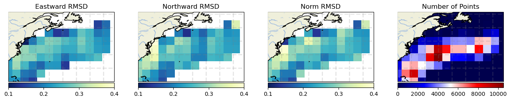
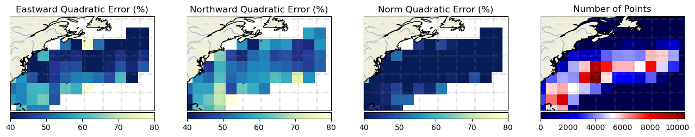

Gulf Stream region#
Gulf Stream results
Compared products #
At 0m
- GlobCurrent Total
- WOC inertial global 0m
- WOC Omega-3D
At 15m
- GlobCurrent Geostrophic
- GlobCurrent Total
- WOC SST-SSH
- WOC Omega-3D
- WOC inertial global 15m
- NeurOST
- OSCAR
1. Spectrum
▶️ At 0m

▶️ At 15m

2. Eulerian RMS
▶️ At 0m
Norm errors
| Mean | Norm Quadratic Error (%) | Norm Correlation | Norm Explained Variance (%) | Norm RMSD | Number of Points |
| GlobCurrent Total | 36.575 | 0.813 | 69.040 | 0.262 | 103022.000 |
| WOC-Omega3D | 42.604 | 0.757 | 60.487 | 0.306 | 93656.000 |
| WOC inertial global 00m | 35.563 | 0.816 | 70.314 | 0.254 | 103008.000 |
Eastward errors
| Mean | Eastward Quadratic Error (%) | Eastward Correlation | Eastward Explained Variance (%) | Eastward RMSD | Number of Points |
| GlobCurrent Total | 46.839 | 0.870 | 73.374 | 0.246 | 103022.000 |
| WOC-Omega3D | 50.965 | 0.843 | 65.576 | 0.273 | 93656.000 |
| WOC inertial global 00m | 45.721 | 0.875 | 76.379 | 0.240 | 103008.000 |
Northward errors
| Mean | Northward Quadratic Error (%) | Northward Correlation | Northward Explained Variance (%) | Northward RMSD | Number of Points |
| GlobCurrent Total | 52.415 | 0.849 | 71.322 | 0.254 | 103022.000 |
| WOC-Omega3D | 61.449 | 0.788 | 61.165 | 0.294 | 93656.000 |
| WOC inertial global 00m | 51.101 | 0.858 | 74.310 | 0.248 | 103008.000 |
Standard deviation error
| STD | Direction difference | Number of Points |
| GlobCurrent Total | 42.638 | 103022.000 |
| WOC-Omega3D | 44.510 | 93656.000 |
| WOC inertial global 00m | 42.407 | 103008.000 |
Binned plots
GlobCurrents Total

WOC-Omega3D

WOC inertial global 00m
GlobCurrents Total

WOC-Omega3D

WOC inertial global 00m
GlobCurrents Total
WOC-Omega3D

WOC inertial global 00m

GlobCurrents Total

WOC-Omega3D

WOC inertial global 00m

▶️ At 15m
Norm errors
| Mean | Norm Quadratic Error (%) | Norm Correlation | Norm Explained Variance (%) | Norm RMSD | Number of Points |
| GlobCurrent Geostrophic | 52.812 | 0.630 | 57.154 | 0.266 | 51943.000 |
| GlobCurrent Total | 51.551 | 0.639 | 57.464 | 0.260 | 50016.000 |
| WOC SST-SSH | 57.433 | 0.571 | 50.292 | 0.286 | 43880.000 |
| WOC inertial global 15m | 50.764 | 0.646 | 58.337 | 0.256 | 50016.000 |
| WOC Omega-3D | 57.558 | 0.558 | 45.312 | 0.287 | 43880.000 |
| NeurOST | 50.832 | 0.690 | 66.189 | 0.256 | 51908.000 |
Eastward errors
| Mean | Eastward Quadratic Error (%) | Eastward Correlation | Eastward Explained Variance (%) | Eastward RMSD | Number of Points |
| GlobCurrent Geostrophic | 67.125 | 0.740 | 61.314 | 0.238 | 51943.000 |
| GlobCurrent Total | 66.044 | 0.749 | 62.690 | 0.235 | 50016.000 |
| WOC SST-SSH | 69.405 | 0.718 | 58.050 | 0.246 | 43880.000 |
| WOC inertial global 15m | 65.414 | 0.759 | 64.594 | 0.232 | 50016.000 |
| WOC Omega-3D | 68.148 | 0.729 | 53.346 | 0.241 | 43880.000 |
| NeurOST | 62.921 | 0.778 | 67.795 | 0.223 | 51908.000 |
Northward errors
| Mean | Northward Quadratic Error (%) | Northward Correlation | Northward Explained Variance (%) | Northward RMSD | Number of Points |
| GlobCurrent Geostrophic | 70.638 | 0.715 | 57.794 | 0.253 | 51943.000 |
| GlobCurrent Total | 69.609 | 0.724 | 59.215 | 0.249 | 50016.000 |
| WOC SST-SSH | 73.304 | 0.685 | 51.841 | 0.257 | 43880.000 |
| WOC inertial global 15m | 68.940 | 0.735 | 61.287 | 0.247 | 50016.000 |
| WOC Omega-3D | 76.700 | 0.654 | 48.572 | 0.269 | 43880.000 |
| NeurOST | 65.033 | 0.763 | 61.323 | 0.233 | 51908.000 |
Standard deviation error
| STD | Direction difference | Number of Points |
| GlobCurrent Geostrophic | 43.021 | 51943.000 |
| GlobCurrent Total | 42.721 | 50016.000 |
| WOC SST-SSH | 43.550 | 43880.000 |
| WOC inertial global 15m | 42.992 | 50016.000 |
| WOC Omega-3D | 43.676 | 43880.000 |
| NeurOST | 43.830 | 51908.000 |
Binned plots
GlobCurrents Total

GlobCurrents

WOC SST-SSH
WOC inertial global 1h

WOC Omega-3D

NeurOST

GlobCurrents Total
GlobCurrents
WOC SST-SSH

WOC inertial global 1h

WOC Omega-3D

NeurOST